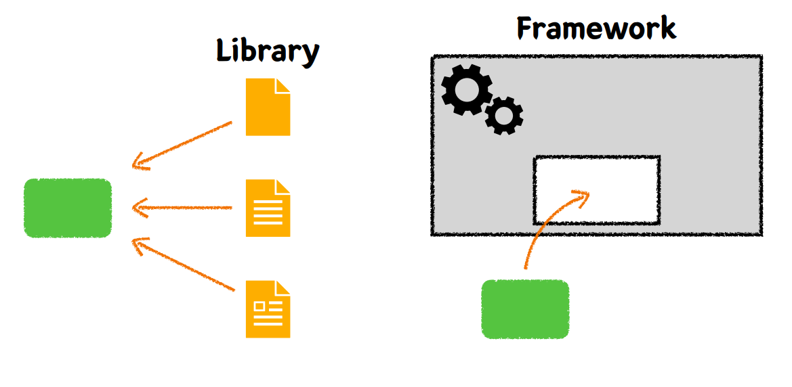

Spring/JPA 훑어보기&기본 엔티티 설계

- 라이브러리(능동)
라이브러리는 특정 기능을 수행하기 위한 코드 모음
개발자가 필요한 기능이 있을 때 해당 라이브러리를 선택적으로 가져와 사용
독립적으로 사용될 수 있습니다.
데이터베이스 연결, 이미지 처리, 네트워크 통신 등의 기능을 제공하는 라이브러리가 있습니다.
- 프레임워크(수동)
프레임워크는 애플리케이션의 전체적인 구조를 제공
개발자에게 규칙, 표준, 디자인 패턴을 제시하여 개발 방법을 정의합니다.
개발자는 프레임워크에서 제공하는 구조 안에서 코드를 작성하고, 프레임워크가 제공하는 규칙과 틀에 따라야 합니다.
웹 애플리케이션을 개발하기 위한 프레임워크로는 Django, Flask(파이썬), Spring(자바) 등이 있습니다.
Spring
- IOC
A객체가B객체 기능이 필요하여 직접 생성,소멸까지 책임지는 강결합 구조에서 약결합으로 분리하기 위한 기술생성 자체에 대한 생명주기에 대한 관리는 별도로 인식한다.
객체의 생명주기에 대한 관리를
제 3자가 한다.스프링은
IOC 컨테이너로A객체가B객체가 필요하면컨테이너에서 제어한다.제어의 역전으로 제어권이
컨테이너에게 있다.
- DI
그 과정에서 주입해줄때 B 객체를 주입하는게 아니라 B 객체가 필요한게 아니라 B 객체가 하는 기능을 필요로 하기 때문에 그 기능을 명세화한 인터페이스를 두고 주입을 한다. A → B 인터페이스가 가진 기능이 필요해서 주입을 받으면 B 객체가 누구의 인스턴스인지 몰라도 사용하기만 하는 개념
- AOP(Aspect Oriented Programming)
기능을 관심사로 보고 비즈니스 로직과는 별개인 부가적인 관심사(로그 기록, 트랜잭션 관리 등)를 코드에서 분리하여 모듈화하는 프로그래밍 접근 방식
ORM
ORM이라는건 객체지향 개념과 RDB간에 패러다임
코드는 객체지향이고,RDB는 테이블형태에 데이터를 보관하기때문에
작성된 객체지향 코드를 하나하나 분리를 해서 테이블에 넣어야하는 일이 생긴다.
객체 지향 패러다임과 관계형 DB 패러다임의 불일치
이전에는 개발자가 객체의 데이터를 한땀한땀 매핑하여 DB에 저장 및 조회(CRUD)
ORM을 사용함으로써 개발자는 단순 작업을 줄이고, 비니지느 로직에 집중할수 있다.
JPA
[ ] Java 진영의 ORM 기술 표준
[ ] 인터페이스이고,
여러 구현체가 있지만 보통 Hibernate를 많이 사용한다.
[ ] 반복적인 CRUD SQL을 생성 및 실행해주고,
여러 부가 기능들을 제공한다.
[ ] 편리하지만 쿼리를 직접 작성하지 않기 때문에,
어떤 식으로 쿼리가 만들어지고 실행되는지
명확하게 이해하고 있어야 한다.
[ ] Spring 진영에서는
JPA를 한번 더 추상화한 Spring Data JPA 제공
[ ] QueryDSL과 조합하여 많이 사용한다.(타입체크,동적쿼리)
@Annotation
@Entity,@Id,@Column
@ManyToOne,@OneToMany,
@OneToOne,@ManyToMany → 일대 다 - 다대 일 관계로 풀어서 사용
두 테이블 간의 관계 , 객체간의 관계등